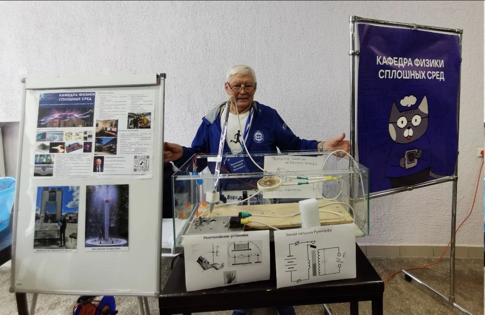

События и конференции
Events and conferences
Новости кафедры, экскурсии, форумы и конференции, на которых выступают наши студенты.
Chair news, excursions, forums and conferences where our students present.
Лента событий
Timeline
Кафедра ФСС на Физфесте
The Chair of Continuous Media Physics at Physfest
Кафедра физики сплошных сред приняла участие в Физфесте. На стенде кафедры были представлены плакат о кафедре и Институте гидродинамики, демонстрационные установки — «Умная катушка Румкорфа» и передача энергии по одному проводу — и материалы о рентгеновских установках. На фото — заведующий кафедрой Е. И. Пальчиков у стенда.
The Chair of Continuous Media Physics took part in Physfest. The chair’s stand featured a poster about the chair and the Institute of Hydrodynamics, demonstration setups — the “Smart Rumkorff coil” and single-wire energy transfer — and materials on X-ray facilities. In the photo: the head of the chair, E. I. Palchikov, at the stand.

Набор на кафедру
Admission to the chair
Объявляется набор студентов 3 курса бакалавриата, а также студентов 2 курса для выполнения курсовых работ.
Admission is open for third-year bachelor students, and second-year students for coursework projects.
Магистранты кафедры — на Форуме будущих технологий в Москве
Master students at the Future Technologies Forum in Moscow
Студенты магистратуры приняли участие в форуме 2025 года.
Our master students participated in the 2025 forum.
Экскурсия на кафедру и в Институт гидродинамики
Excursion to the chair and the Institute of Hydrodynamics
Фотографии и презентации с экскурсии. Выступали Е. И. Пальчиков («О кафедре ФСС») и Э. Р. Прууэл («О станции 1-3 ЦКП СКИФ»).
Photos and presentations from the excursion. Talks by E. I. Palchikov (about the chair) and E. R. Pruuel (about station 1-3 of the SKIF facility).
SMART-Picnic
SMART-Picnic
Мероприятие из анонса событий кафедры.
An event from the chair’s upcoming events list.
Где выступают студенты кафедры
Where our students present
Ниже — площадки, на которых принято представлять результаты работ. Актуальные даты и сроки подачи тезисов уточняйте на сайтах конференций.
Venues where results are usually presented. Please check the conference websites for current dates and abstract deadlines.
Международная научная студенческая конференция (МНСК)
International Student Scientific Conference (MNSK)
Ежегодная конференция НГУ для студентов и молодых исследователей.
NSU’s annual conference for students and early-career researchers.
Лаврентьевские чтения
Lavrentiev Readings
Научные чтения по математике, механике и физике, связанные с именем основателя кафедры.
Scientific readings in mathematics, mechanics and physics named after the founder of the chair.
Форум будущих технологий
Future Technologies Forum
Площадка, где свои работы представляли магистранты кафедры.
A venue where our master students presented their work.